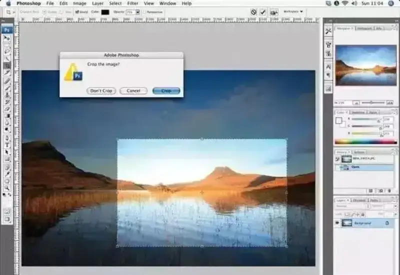
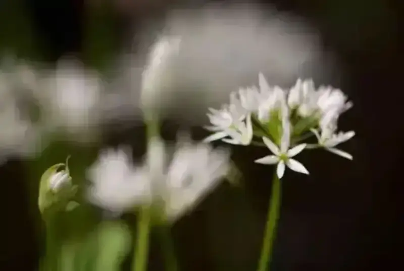
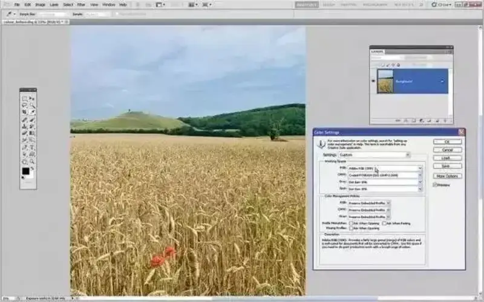

Published: 2023-02-18
Source link: https://www.cnphotos.net/academy/show-116.html
In a way, photography is the process of framing reality. Composition is the core skill of photography. We have shared several articles on composition before. If you cannot get the basics of composition right, how can you take good photos?
So below are 10 common composition mistakes. See which ones you have made.
1. The subject is too small in the frame
When you see a beautiful scene, you can focus on the single best point. A photo is different. After you take it, the scenery around that point also becomes clear and enters the frame. When the surroundings are clear, the subject can look unimportant. So before you press the shutter, ask yourself: if I step forward a few paces or zoom in, will the frame speak more clearly?
2. Shooting the moment you see it
Many beginners grab their camera or phone and shoot the nice thing at once. They forget the important step, which is to think about how to shoot it well.
If you shoot a thing at once, you record its look. But you do not capture the mood of the place or its spirit. If you do not think, you will not know the angle that shows it at its best.
When you see a flower in a garden, do not just shoot that one flower. Look at the space around it. See if you can find an angle that shows the whole field of flowers.
3. The subject is dead center
Placing the subject in the center is fine at times. But most of the time it is better to follow the rule of thirds and place the subject to one side. Many cameras can show rule-of-thirds guide lines. You can then place the subject where two guide lines cross.
4. An empty foreground
Whether you shoot landscape or a scene, the foreground needs a subject that adds depth and draws the eye. If the foreground is empty, the photo has no pull. The viewer takes it in at a glance. The eye meets a barrier it only wants to step over. This wastes the space of the frame.
Most landscape shots have something in the foreground to create a point of visual interest.
5. Fixing the aspect ratio in post
This often goes with an empty foreground. People like to crop away blank space in post to improve the composition. Cropping is fine, but if you plan the aspect ratio when you shoot, you are more likely to get a good photo. Cameras usually have an aspect-ratio setting. You can see the different ratios through the viewfinder or on the screen.

6. A cluttered background
Sometimes you can avoid this by changing your viewpoint, switching lenses, or using a wider aperture. The key is to do all this before you press the shutter.
Build a good habit. Before you shoot and frame, look around for the best background and the best spot. If you are waiting for something, pick the background first, then wait for it to happen and shoot.

7. The wrong depth of field
Depth of field is a great tool for composition. It decides which parts of the frame are sharp. A small aperture gives deep depth of field, which is usually fine. But when you want the subject to stand out from its surroundings, use a wide aperture to control the depth of field.
8. Unrelated elements in the frame
It is best when all elements in the photo belong together and relate to each other.
If a landscape photo has a trail of footprints as a leading line that runs from the foreground to a grand subject, it ties two parts of the frame together and guides the eye through the work. Leading lines do this. They help us feel the mood of the landscape and the balance between its elements.
9. The frame is tilted
A tilted horizon looks bad in any photo and always costs points. Many cameras have an electronic level, and many phones have it too. It shows in the viewfinder or on the screen and makes sure the frame is level.
10. Ignoring color
Color plays a big part in whether a photo works. You must take it into account when you compose.
When the color of a subject is the complement of its surroundings, the frame stands out more.
For example, green is the complement of red. A red flower in a green field is surely the most eye-catching thing in the frame.

Out of these 10 common composition mistakes, how many have you made?